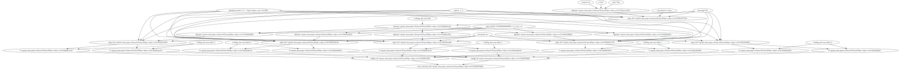

jobflow#
Define workflow with jobflow#
import numpy as np
from jobflow import job, Flow
from python_workflow_definition.jobflow import write_workflow_json
from quantum_espresso_workflow import (
calculate_qe as _calculate_qe,
generate_structures as _generate_structures,
get_bulk_structure as _get_bulk_structure,
plot_energy_volume_curve as _plot_energy_volume_curve,
)
workflow_json_filename = "jobflow_qe.json"
calculate_qe = job(_calculate_qe, data=["energy", "volume", "structure"])
generate_structures = job(_generate_structures, data=[f"s_{i}" for i in range(100)])
plot_energy_volume_curve = job(_plot_energy_volume_curve)
get_bulk_structure = job(_get_bulk_structure)
pseudopotentials = {"Al": "Al.pbe-n-kjpaw_psl.1.0.0.UPF"}
structure = get_bulk_structure(
element="Al",
a=4.05,
cubic=True,
)
calc_mini = calculate_qe(
working_directory="mini",
input_dict={
"structure": structure.output,
"pseudopotentials": pseudopotentials,
"kpts": (3, 3, 3),
"calculation": "vc-relax",
"smearing": 0.02,
},
)
number_of_strains = 5
structure_lst = generate_structures(
structure=calc_mini.output.structure,
strain_lst=np.linspace(0.9, 1.1, number_of_strains),
)
job_strain_lst = []
for i in range(number_of_strains):
calc_strain = calculate_qe(
working_directory="strain_" + str(i),
input_dict={
"structure": getattr(structure_lst.output, f"s_{i}"),
"pseudopotentials": pseudopotentials,
"kpts": (3, 3, 3),
"calculation": "scf",
"smearing": 0.02,
},
)
job_strain_lst.append(calc_strain)
plot = plot_energy_volume_curve(
volume_lst=[job.output.volume for job in job_strain_lst],
energy_lst=[job.output.energy for job in job_strain_lst],
)
flow = Flow([structure, calc_mini, structure_lst] + job_strain_lst + [plot])
write_workflow_json(flow=flow, file_name=workflow_json_filename)
!cat {workflow_json_filename}
{"nodes": {"0": "quantum_espresso_workflow.get_bulk_structure", "1": "quantum_espresso_workflow.calculate_qe", "2": "quantum_espresso_workflow.generate_structures", "3": "quantum_espresso_workflow.calculate_qe", "4": "quantum_espresso_workflow.calculate_qe", "5": "quantum_espresso_workflow.calculate_qe", "6": "quantum_espresso_workflow.calculate_qe", "7": "quantum_espresso_workflow.calculate_qe", "8": "quantum_espresso_workflow.plot_energy_volume_curve", "9": "Al", "10": 4.05, "11": true, "12": "mini", "13": "python_workflow_definition.shared.get_dict", "14": {"Al": "Al.pbe-n-kjpaw_psl.1.0.0.UPF"}, "15": [3, 3, 3], "16": "vc-relax", "17": 0.02, "18": [0.9, 0.9500000000000001, 1.0, 1.05, 1.1], "19": "strain_0", "20": "python_workflow_definition.shared.get_dict", "21": "scf", "22": "strain_1", "23": "python_workflow_definition.shared.get_dict", "24": "strain_2", "25": "python_workflow_definition.shared.get_dict", "26": "strain_3", "27": "python_workflow_definition.shared.get_dict", "28": "strain_4", "29": "python_workflow_definition.shared.get_dict", "30": "python_workflow_definition.shared.get_list", "31": "python_workflow_definition.shared.get_list"}, "edges": [{"tn": 0, "th": "element", "sn": 9, "sh": null}, {"tn": 0, "th": "a", "sn": 10, "sh": null}, {"tn": 0, "th": "cubic", "sn": 11, "sh": null}, {"tn": 1, "th": "working_directory", "sn": 12, "sh": null}, {"tn": 13, "th": "structure", "sn": 0, "sh": null}, {"tn": 13, "th": "pseudopotentials", "sn": 14, "sh": null}, {"tn": 13, "th": "kpts", "sn": 15, "sh": null}, {"tn": 13, "th": "calculation", "sn": 16, "sh": null}, {"tn": 13, "th": "smearing", "sn": 17, "sh": null}, {"tn": 1, "th": "input_dict", "sn": 13, "sh": null}, {"tn": 2, "th": "structure", "sn": 1, "sh": "structure"}, {"tn": 2, "th": "strain_lst", "sn": 18, "sh": null}, {"tn": 3, "th": "working_directory", "sn": 19, "sh": null}, {"tn": 20, "th": "structure", "sn": 2, "sh": "s_0"}, {"tn": 20, "th": "pseudopotentials", "sn": 14, "sh": null}, {"tn": 20, "th": "kpts", "sn": 15, "sh": null}, {"tn": 20, "th": "calculation", "sn": 21, "sh": null}, {"tn": 20, "th": "smearing", "sn": 17, "sh": null}, {"tn": 3, "th": "input_dict", "sn": 20, "sh": null}, {"tn": 4, "th": "working_directory", "sn": 22, "sh": null}, {"tn": 23, "th": "structure", "sn": 2, "sh": "s_1"}, {"tn": 23, "th": "pseudopotentials", "sn": 14, "sh": null}, {"tn": 23, "th": "kpts", "sn": 15, "sh": null}, {"tn": 23, "th": "calculation", "sn": 21, "sh": null}, {"tn": 23, "th": "smearing", "sn": 17, "sh": null}, {"tn": 4, "th": "input_dict", "sn": 23, "sh": null}, {"tn": 5, "th": "working_directory", "sn": 24, "sh": null}, {"tn": 25, "th": "structure", "sn": 2, "sh": "s_2"}, {"tn": 25, "th": "pseudopotentials", "sn": 14, "sh": null}, {"tn": 25, "th": "kpts", "sn": 15, "sh": null}, {"tn": 25, "th": "calculation", "sn": 21, "sh": null}, {"tn": 25, "th": "smearing", "sn": 17, "sh": null}, {"tn": 5, "th": "input_dict", "sn": 25, "sh": null}, {"tn": 6, "th": "working_directory", "sn": 26, "sh": null}, {"tn": 27, "th": "structure", "sn": 2, "sh": "s_3"}, {"tn": 27, "th": "pseudopotentials", "sn": 14, "sh": null}, {"tn": 27, "th": "kpts", "sn": 15, "sh": null}, {"tn": 27, "th": "calculation", "sn": 21, "sh": null}, {"tn": 27, "th": "smearing", "sn": 17, "sh": null}, {"tn": 6, "th": "input_dict", "sn": 27, "sh": null}, {"tn": 7, "th": "working_directory", "sn": 28, "sh": null}, {"tn": 29, "th": "structure", "sn": 2, "sh": "s_4"}, {"tn": 29, "th": "pseudopotentials", "sn": 14, "sh": null}, {"tn": 29, "th": "kpts", "sn": 15, "sh": null}, {"tn": 29, "th": "calculation", "sn": 21, "sh": null}, {"tn": 29, "th": "smearing", "sn": 17, "sh": null}, {"tn": 7, "th": "input_dict", "sn": 29, "sh": null}, {"tn": 30, "th": "0", "sn": 3, "sh": "volume"}, {"tn": 30, "th": "1", "sn": 4, "sh": "volume"}, {"tn": 30, "th": "2", "sn": 5, "sh": "volume"}, {"tn": 30, "th": "3", "sn": 6, "sh": "volume"}, {"tn": 30, "th": "4", "sn": 7, "sh": "volume"}, {"tn": 8, "th": "volume_lst", "sn": 30, "sh": null}, {"tn": 31, "th": "0", "sn": 3, "sh": "energy"}, {"tn": 31, "th": "1", "sn": 4, "sh": "energy"}, {"tn": 31, "th": "2", "sn": 5, "sh": "energy"}, {"tn": 31, "th": "3", "sn": 6, "sh": "energy"}, {"tn": 31, "th": "4", "sn": 7, "sh": "energy"}, {"tn": 8, "th": "energy_lst", "sn": 31, "sh": null}]}
Load Workflow with aiida#
from aiida import load_profile
load_profile()
Profile<uuid='bcf9e395e4bf4b64a0a705d8659c0a9c' name='default'>
from python_workflow_definition.aiida import load_workflow_json
wg = load_workflow_json(workflow_json_filename)
wg
wg.run()
04/01/2025 10:52:32 AM <3361007> aiida.orm.nodes.process.workflow.workchain.WorkChainNode: [REPORT] [51189|WorkGraphEngine|continue_workgraph]: tasks ready to run: get_bulk_structure1
04/01/2025 10:52:33 AM <3361007> aiida.orm.nodes.process.workflow.workchain.WorkChainNode: [REPORT] [51189|WorkGraphEngine|update_task_state]: Task: get_bulk_structure1, type: PyFunction, finished.
04/01/2025 10:52:34 AM <3361007> aiida.orm.nodes.process.workflow.workchain.WorkChainNode: [REPORT] [51189|WorkGraphEngine|continue_workgraph]: tasks ready to run: get_dict10
04/01/2025 10:52:35 AM <3361007> aiida.orm.nodes.process.workflow.workchain.WorkChainNode: [REPORT] [51189|WorkGraphEngine|update_task_state]: Task: get_dict10, type: PyFunction, finished.
04/01/2025 10:52:36 AM <3361007> aiida.orm.nodes.process.workflow.workchain.WorkChainNode: [REPORT] [51189|WorkGraphEngine|continue_workgraph]: tasks ready to run: calculate_qe2
Note: The following floating-point exceptions are signalling: IEEE_INVALID_FLAG
04/01/2025 10:52:55 AM <3361007> aiida.orm.nodes.process.calculation.calcfunction.CalcFunctionNode: [WARNING] Found extra results that are not included in the output: dict_keys(['energy', 'volume'])
04/01/2025 10:52:55 AM <3361007> aiida.orm.nodes.process.workflow.workchain.WorkChainNode: [REPORT] [51189|WorkGraphEngine|update_task_state]: Task: calculate_qe2, type: PyFunction, finished.
04/01/2025 10:52:56 AM <3361007> aiida.orm.nodes.process.workflow.workchain.WorkChainNode: [REPORT] [51189|WorkGraphEngine|continue_workgraph]: tasks ready to run: generate_structures3
04/01/2025 10:52:57 AM <3361007> aiida.orm.nodes.process.workflow.workchain.WorkChainNode: [REPORT] [51189|WorkGraphEngine|update_task_state]: Task: generate_structures3, type: PyFunction, finished.
04/01/2025 10:52:58 AM <3361007> aiida.orm.nodes.process.workflow.workchain.WorkChainNode: [REPORT] [51189|WorkGraphEngine|continue_workgraph]: tasks ready to run: get_dict11,get_dict12,get_dict13,get_dict14,get_dict15
04/01/2025 10:52:59 AM <3361007> aiida.orm.nodes.process.workflow.workchain.WorkChainNode: [REPORT] [51189|WorkGraphEngine|update_task_state]: Task: get_dict11, type: PyFunction, finished.
04/01/2025 10:52:59 AM <3361007> aiida.orm.nodes.process.workflow.workchain.WorkChainNode: [REPORT] [51189|WorkGraphEngine|continue_workgraph]: tasks ready to run: get_dict12,get_dict13,get_dict14,get_dict15,calculate_qe4
04/01/2025 10:53:00 AM <3361007> aiida.orm.nodes.process.workflow.workchain.WorkChainNode: [REPORT] [51189|WorkGraphEngine|update_task_state]: Task: get_dict12, type: PyFunction, finished.
04/01/2025 10:53:01 AM <3361007> aiida.orm.nodes.process.workflow.workchain.WorkChainNode: [REPORT] [51189|WorkGraphEngine|continue_workgraph]: tasks ready to run: get_dict13,get_dict14,get_dict15,calculate_qe4,calculate_qe5
04/01/2025 10:53:02 AM <3361007> aiida.orm.nodes.process.workflow.workchain.WorkChainNode: [REPORT] [51189|WorkGraphEngine|update_task_state]: Task: get_dict13, type: PyFunction, finished.
04/01/2025 10:53:03 AM <3361007> aiida.orm.nodes.process.workflow.workchain.WorkChainNode: [REPORT] [51189|WorkGraphEngine|continue_workgraph]: tasks ready to run: get_dict14,get_dict15,calculate_qe4,calculate_qe5,calculate_qe6
04/01/2025 10:53:04 AM <3361007> aiida.orm.nodes.process.workflow.workchain.WorkChainNode: [REPORT] [51189|WorkGraphEngine|update_task_state]: Task: get_dict14, type: PyFunction, finished.
04/01/2025 10:53:04 AM <3361007> aiida.orm.nodes.process.workflow.workchain.WorkChainNode: [REPORT] [51189|WorkGraphEngine|continue_workgraph]: tasks ready to run: get_dict15,calculate_qe4,calculate_qe5,calculate_qe6,calculate_qe7
04/01/2025 10:53:05 AM <3361007> aiida.orm.nodes.process.workflow.workchain.WorkChainNode: [REPORT] [51189|WorkGraphEngine|update_task_state]: Task: get_dict15, type: PyFunction, finished.
04/01/2025 10:53:06 AM <3361007> aiida.orm.nodes.process.workflow.workchain.WorkChainNode: [REPORT] [51189|WorkGraphEngine|continue_workgraph]: tasks ready to run: calculate_qe4,calculate_qe5,calculate_qe6,calculate_qe7,calculate_qe8
Note: The following floating-point exceptions are signalling: IEEE_INVALID_FLAG
04/01/2025 10:53:10 AM <3361007> aiida.orm.nodes.process.calculation.calcfunction.CalcFunctionNode: [WARNING] Found extra results that are not included in the output: dict_keys(['structure'])
04/01/2025 10:53:10 AM <3361007> aiida.orm.nodes.process.workflow.workchain.WorkChainNode: [REPORT] [51189|WorkGraphEngine|update_task_state]: Task: calculate_qe4, type: PyFunction, finished.
04/01/2025 10:53:11 AM <3361007> aiida.orm.nodes.process.workflow.workchain.WorkChainNode: [REPORT] [51189|WorkGraphEngine|continue_workgraph]: tasks ready to run: calculate_qe5,calculate_qe6,calculate_qe7,calculate_qe8
Note: The following floating-point exceptions are signalling: IEEE_INVALID_FLAG
04/01/2025 10:53:15 AM <3361007> aiida.orm.nodes.process.calculation.calcfunction.CalcFunctionNode: [WARNING] Found extra results that are not included in the output: dict_keys(['structure'])
04/01/2025 10:53:16 AM <3361007> aiida.orm.nodes.process.workflow.workchain.WorkChainNode: [REPORT] [51189|WorkGraphEngine|update_task_state]: Task: calculate_qe5, type: PyFunction, finished.
04/01/2025 10:53:16 AM <3361007> aiida.orm.nodes.process.workflow.workchain.WorkChainNode: [REPORT] [51189|WorkGraphEngine|continue_workgraph]: tasks ready to run: calculate_qe6,calculate_qe7,calculate_qe8
Note: The following floating-point exceptions are signalling: IEEE_INVALID_FLAG
04/01/2025 10:53:21 AM <3361007> aiida.orm.nodes.process.calculation.calcfunction.CalcFunctionNode: [WARNING] Found extra results that are not included in the output: dict_keys(['structure'])
04/01/2025 10:53:21 AM <3361007> aiida.orm.nodes.process.workflow.workchain.WorkChainNode: [REPORT] [51189|WorkGraphEngine|update_task_state]: Task: calculate_qe6, type: PyFunction, finished.
04/01/2025 10:53:22 AM <3361007> aiida.orm.nodes.process.workflow.workchain.WorkChainNode: [REPORT] [51189|WorkGraphEngine|continue_workgraph]: tasks ready to run: calculate_qe7,calculate_qe8
Note: The following floating-point exceptions are signalling: IEEE_INVALID_FLAG
04/01/2025 10:53:27 AM <3361007> aiida.orm.nodes.process.calculation.calcfunction.CalcFunctionNode: [WARNING] Found extra results that are not included in the output: dict_keys(['structure'])
04/01/2025 10:53:28 AM <3361007> aiida.orm.nodes.process.workflow.workchain.WorkChainNode: [REPORT] [51189|WorkGraphEngine|update_task_state]: Task: calculate_qe7, type: PyFunction, finished.
04/01/2025 10:53:28 AM <3361007> aiida.orm.nodes.process.workflow.workchain.WorkChainNode: [REPORT] [51189|WorkGraphEngine|continue_workgraph]: tasks ready to run: calculate_qe8
Note: The following floating-point exceptions are signalling: IEEE_INVALID_FLAG
04/01/2025 10:53:34 AM <3361007> aiida.orm.nodes.process.calculation.calcfunction.CalcFunctionNode: [WARNING] Found extra results that are not included in the output: dict_keys(['structure'])
04/01/2025 10:53:34 AM <3361007> aiida.orm.nodes.process.workflow.workchain.WorkChainNode: [REPORT] [51189|WorkGraphEngine|update_task_state]: Task: calculate_qe8, type: PyFunction, finished.
04/01/2025 10:53:35 AM <3361007> aiida.orm.nodes.process.workflow.workchain.WorkChainNode: [REPORT] [51189|WorkGraphEngine|continue_workgraph]: tasks ready to run: get_list16,get_list17
04/01/2025 10:53:36 AM <3361007> aiida.orm.nodes.process.workflow.workchain.WorkChainNode: [REPORT] [51189|WorkGraphEngine|update_task_state]: Task: get_list16, type: PyFunction, finished.
04/01/2025 10:53:36 AM <3361007> aiida.orm.nodes.process.workflow.workchain.WorkChainNode: [REPORT] [51189|WorkGraphEngine|continue_workgraph]: tasks ready to run: get_list17
04/01/2025 10:53:37 AM <3361007> aiida.orm.nodes.process.workflow.workchain.WorkChainNode: [REPORT] [51189|WorkGraphEngine|update_task_state]: Task: get_list17, type: PyFunction, finished.
04/01/2025 10:53:38 AM <3361007> aiida.orm.nodes.process.workflow.workchain.WorkChainNode: [REPORT] [51189|WorkGraphEngine|continue_workgraph]: tasks ready to run: plot_energy_volume_curve9
04/01/2025 10:53:39 AM <3361007> aiida.orm.nodes.process.workflow.workchain.WorkChainNode: [REPORT] [51189|WorkGraphEngine|update_task_state]: Task: plot_energy_volume_curve9, type: PyFunction, finished.
04/01/2025 10:53:39 AM <3361007> aiida.orm.nodes.process.workflow.workchain.WorkChainNode: [REPORT] [51189|WorkGraphEngine|continue_workgraph]: tasks ready to run:
04/01/2025 10:53:41 AM <3361007> aiida.orm.nodes.process.workflow.workchain.WorkChainNode: [REPORT] [51189|WorkGraphEngine|finalize]: Finalize workgraph.

Load Workflow with pyiron_base#
from pyiron_base import Project
from python_workflow_definition.pyiron_base import load_workflow_json
pr = Project("test")
pr.remove_jobs(recursive=True, silently=True)
delayed_object = load_workflow_json(project=pr, file_name=workflow_json_filename)
delayed_object.draw()

delayed_object.pull()
The job get_bulk_structure_f1e730ed97e30e5439e855d2ac41396f was saved and received the ID: 4
The job get_dict_bbed7e528d369f5fa02591748be3166d was saved and received the ID: 5
The job calculate_qe_a8254d13768b11f13ee9368124819d22 was saved and received the ID: 6
Note: The following floating-point exceptions are signalling: IEEE_INVALID_FLAG
The job generate_structures_7c00a7a36fdf7a83905a933d6458c9f6 was saved and received the ID: 7
The job get_dict_9fea1887c87374cda848be8c394400b6 was saved and received the ID: 8
The job calculate_qe_a2a0f9b449a97089f66fd4697c1184d4 was saved and received the ID: 9
Note: The following floating-point exceptions are signalling: IEEE_INVALID_FLAG
The job get_dict_736160eef13d04e2065cf2c38c62bf47 was saved and received the ID: 10
The job calculate_qe_42a1041b6acc70e91f55e4a2a877ec0b was saved and received the ID: 11
Note: The following floating-point exceptions are signalling: IEEE_INVALID_FLAG
The job get_dict_618fccf949c159d8a1573c4cda125aae was saved and received the ID: 12
The job calculate_qe_d5f2ff242c26f0b8badef6df9a0504a5 was saved and received the ID: 13
Note: The following floating-point exceptions are signalling: IEEE_INVALID_FLAG
The job get_dict_61f81e04658f67188ad4502e007fe475 was saved and received the ID: 14
The job calculate_qe_2f09fb4c3a6570dbdc141588f072fec6 was saved and received the ID: 15
Note: The following floating-point exceptions are signalling: IEEE_INVALID_FLAG
The job get_dict_0bf0210bb59731567645c21e9c07d901 was saved and received the ID: 16
The job calculate_qe_8e0081288044bb59e2eb975aab60c98c was saved and received the ID: 17
Note: The following floating-point exceptions are signalling: IEEE_INVALID_FLAG
The job get_list_56b7ebcd322ece2c1200ba8d040fc0bd was saved and received the ID: 18
The job get_list_8d6e79fedf35b08653113905df993b7b was saved and received the ID: 19
The job plot_energy_volume_curve_fa6e68740c464fa9316d532209ff492f was saved and received the ID: 20